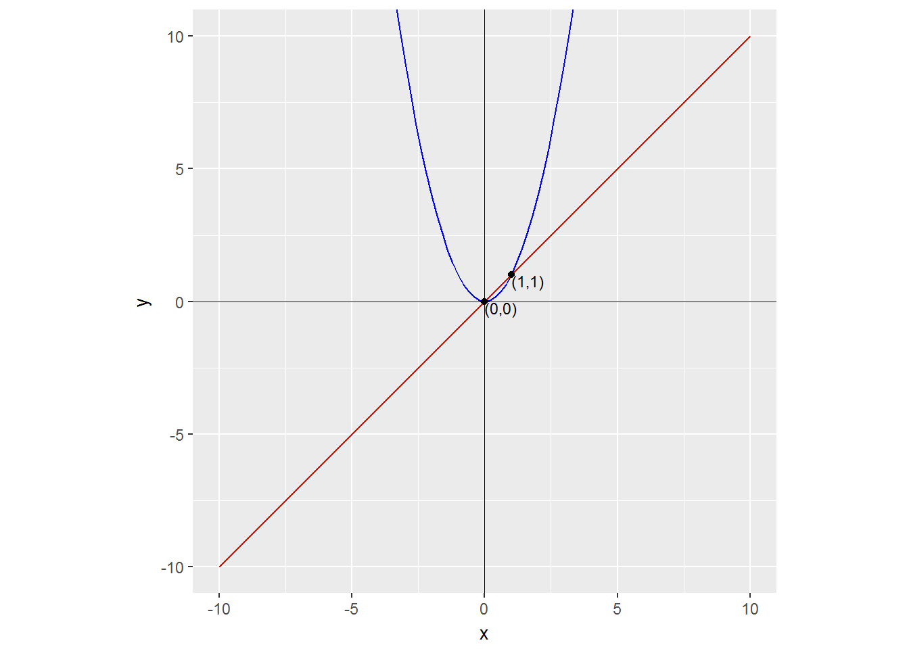
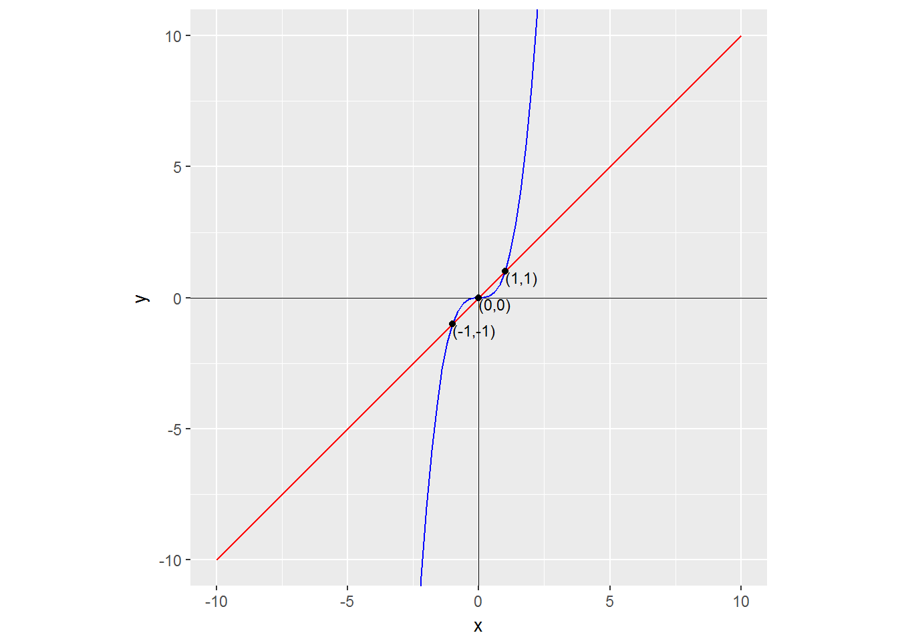
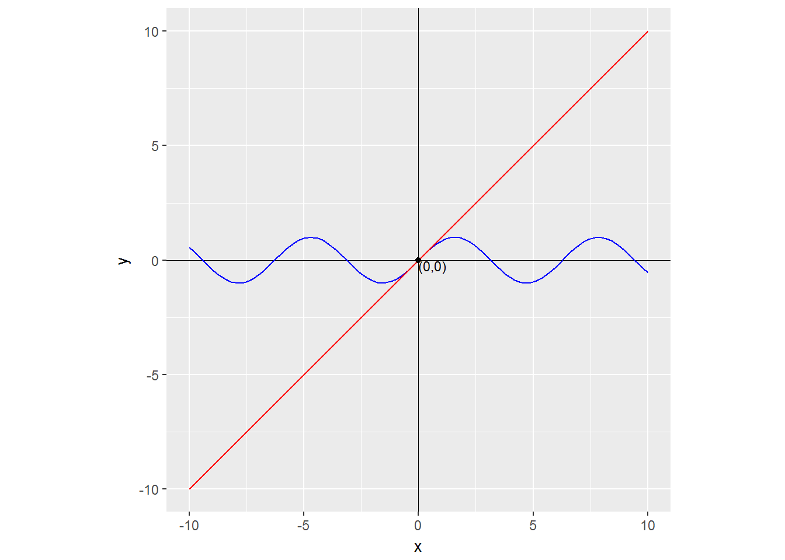
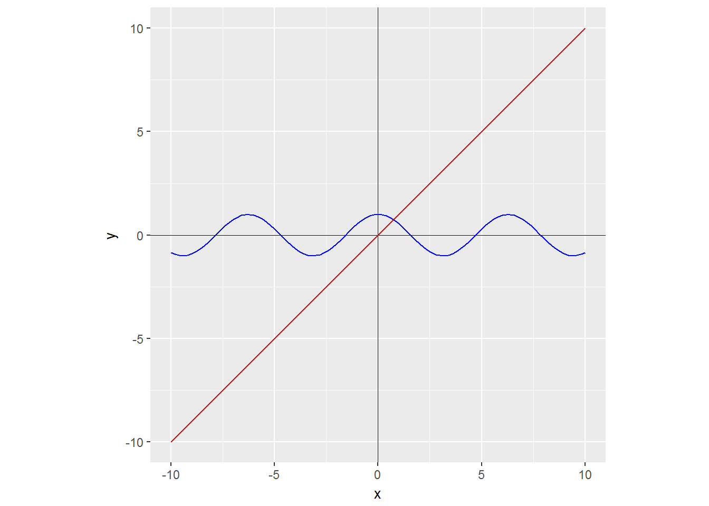
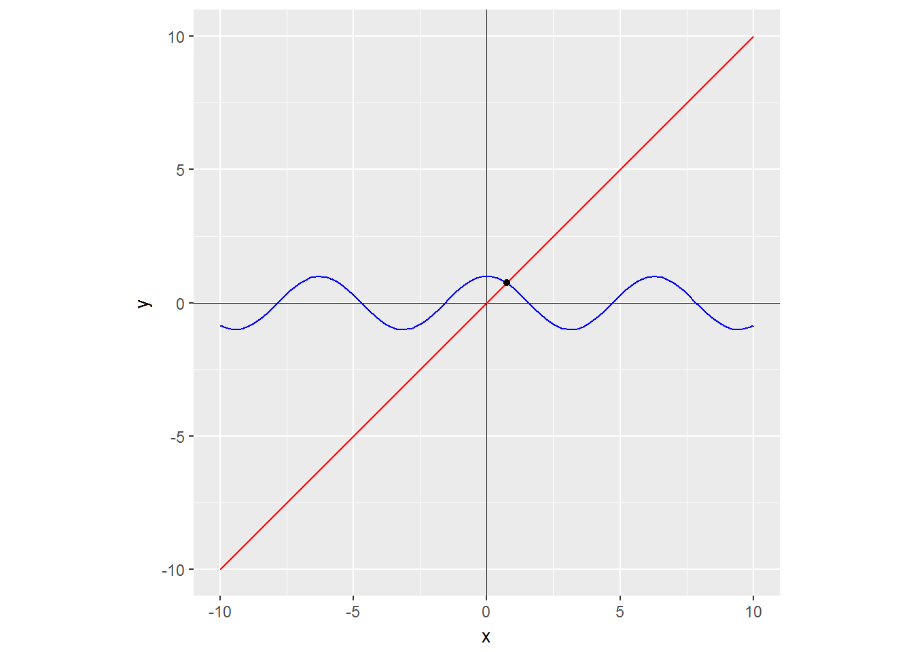

knitr::opts_chunk$set(warning = FALSE, message = FALSE)library(tidyverse)
Fix <- function(f) {
function(...) {
out <- f(...)
equals <- map2_lgl(out, f(out), compose(isTRUE, all.equal))
unique(out[equals])
}
}
f <- function(x) x^3
all(Fix(f)(-10:10) == f(Fix(f)(-10:10)))## [1] TRUEplot_fixed_point <- function(f, xs) {
df <- data_frame(x = xs,
y = ifelse(x %in% Fix(f)(x), x, NA)) %>%
filter(!is.na(y))
ggplot(data.frame(x = xs), aes(x)) +
geom_hline(yintercept = 0, size = 0.1) +
geom_vline(xintercept = 0, size = 0.1) +
stat_function(fun = f, color = "blue") +
stat_function(fun = function(x) x, color = "red") +
geom_point(aes(y = y), data = df) +
geom_text(aes(y = y, label = sprintf("(%s,%s)", x, y)),
data = df, size = 3, hjust = 0, vjust = 1) +
coord_equal(ylim = range(xs))
}domain <- -10:10
plot_fixed_point(function(x) x^2, domain)
plot_fixed_point(function(x) x^3, domain)
plot_fixed_point(sin, domain)
plot_fixed_point(cos, domain)
afp <- cos(cos(cos(cos(cos(cos(cos(cos(cos(cos(-1))))))))))
afp## [1] 0.7442374plot_fixed_point(cos, domain) +
geom_point(aes(x = afp, y = afp))
iter_apply <- function(f, n, .init, ...) {
reduce(seq_len(n), function(x, y) f(x, ...), .init = .init)
}
iter_apply(function(x) x + 2, 3, 0)## [1] 6iter_apply(cos, 10, -1)## [1] 0.7442374is_even <- function(x) x %% 2 == 0
is_magic <- function(x) x == 13
is_less_than <- function(n) function(x) x < n
keep(1:20, ~is_even(.) && !is_less_than(10)(.) || is_magic(.))## [1] 10 12 13 14 16 18 20fs <- list(sin, function(x) x^2, cos)
lift(compose)(fs)(1:5)## [1] 0.28779783 0.17231386 0.83054479 0.41436956 0.08037744`%.%` <- function(f1, f2) function(...) f1(f2(...))
(fs[[1]] %.% fs[[2]] %.% fs[[3]])(1:5)## [1] 0.28779783 0.17231386 0.83054479 0.41436956 0.08037744